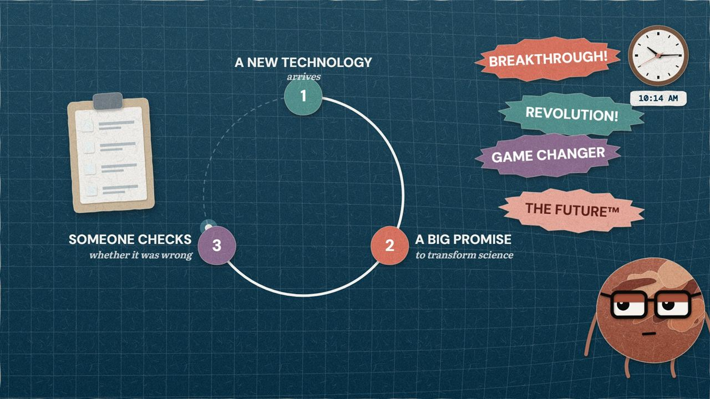
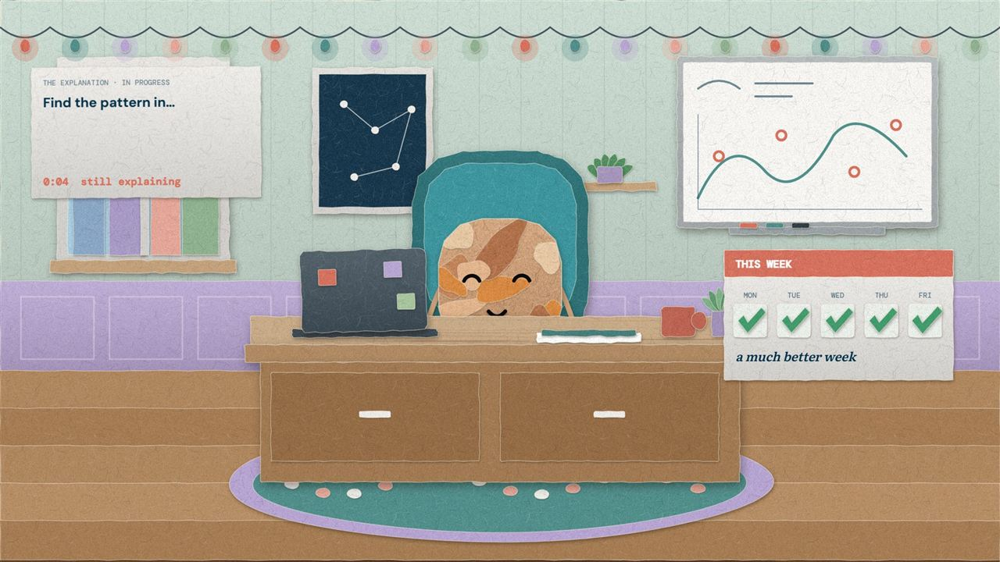
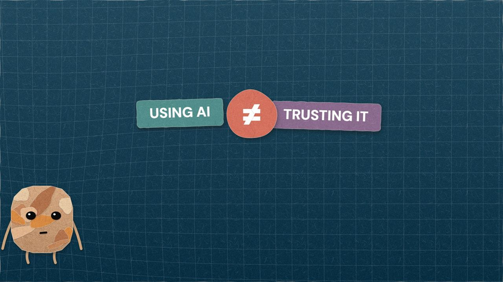
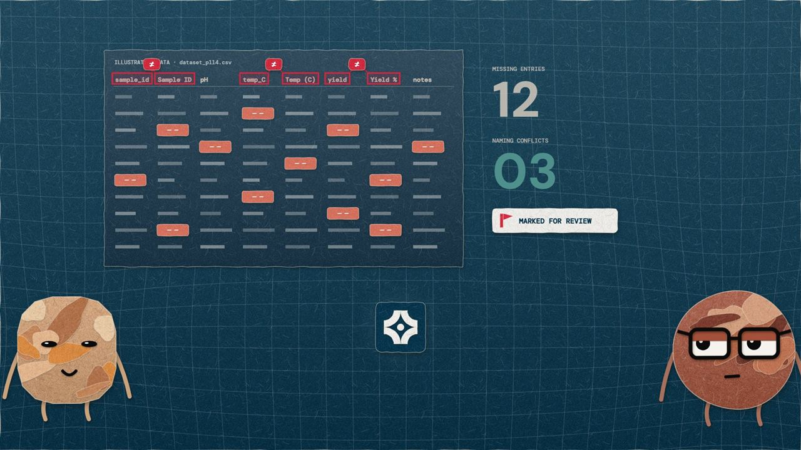

Science, AI and the Gravity of Questions
Hard questions, worked through together.
GraviQuest is a community for anyone who works with evidence. Each Topic takes one question about science or AI all the way down, and your workspace keeps the notes, the sources and Pulsar beside you.
Free account. No field or degree required.
Two-body orbit: closed, periodic, exactly solvable
Kepler’s formula predicts these two exactly. Bring your pointer close: you are the third body.
Why it matters: Is the universe computable?- Sources, gradedStart here, go further, primary. Every citation resolves.
- The case against usEach Topic publishes the strongest objection to its own reading.
- Corrections in publicLogged on the piece they belong to, never quietly edited away.
- Free and wholeNo paywall, no teaser depth, no locked second half.
One Question, All the Way Down
A Topic is not a video and not an article. It is one question with every layer wrapped around it, so you stop at the depth that suits you and never hit a locked door.
Topic 01 · AI in Research · Open now
Can you trust an answer that looks right?
An assistant reads a number off a dataset, and it is correct. Professor Hulse’s reply is the whole Topic: “That proves you can read a number.”
Open the Topic-
01
Video
The Answer That Looked Right: a professor, a student and an assistant called Pulsar, with the full transcript.
-
02
Essay
Reading a number is not evidence. Overview or In depth: neither is a teaser, both are the whole case.
-
03
Sources
From a beginner’s guide to protein data to the AlphaFold and CASP papers, every link checked.
-
04
Timeline
From Anfinsen in 1973 to the 2024 Nobel Prize, and the citations that looked right in between.
-
05
Try It
Five answers that all look right. Decide which ones to check.
-
06
Viewpoints
Check everything, or check by risk? Our reading, and the strongest case against it.
-
07
Discussion
This week’s question and the replies, read by a moderator before they appear.




Stills from The Answer That Looked Right, our first video.
Two Readings, Both Defensible
We publish the strongest case against our own reading. If the counter-argument is weak, that is our failure, and you can say so.
For checking
An assistant changes how fast drafts arrive, not who answers for them. A number in a report is the scientist’s claim, whoever produced it.
The position the video leans towardAgainst
If the assistant is right more often than a tired researcher at the end of a long week, a rule that its answers need checking is ritual, not rigour. Checks belong where errors are likely.
The strongest objection we could findThis Week’s Question
If an assistant has been right ninety-nine times in a row, what should make you check the hundredth?
A Place to Do the Work
Sign in and GraviQuest stops being something you read. What you save from the site, your research projects, the sources you are learning from, and an assistant that shows what it read before it answers.
Home
Pick up where you left off
Research / Personal
Protein stability screen
- Six samples, uploaded yesterday: length, mass and melting point.
- Ask Pulsar to answer only from these files, and it does.
- Before ranking by stability, Pulsar marks which results need validating.
Knowledge / Notes
Reading notes: can you trust an answer that looks right?
- Walters & Wilder 2023: many of the references ChatGPT wrote did not exist, and looked exactly like real ones.
- AlphaFold scores every residue for confidence. A prediction that says where not to trust it.
- My rule: check anything that compares, carries a unit, or cites something I did not give it.
Library / Saved
Kept from the site
- The Answer That Looked RightTopic 01 · Video and transcript
- Reading a number is not evidenceTopic 01 · Essay, in depth
- Highly accurate protein structure prediction with AlphaFoldJumper et al. 2021 · Primary source
Pulsar
What is the molecular weight of the protein in yesterday’s dataset?
About 9.8 kDa. That shows I can read a value from your file. It is not evidence the value is right.
Read: Protein stability screen
Library
What you keep from the public site, Topics, essays and sources, waits here to be read again and annotated.
Research Workspace
Projects, notes, data rooms and collaborators. Personal work stays private; project work follows each project’s access.
Knowledge Workspace
What you are reading, what you have written down, what you are rehearsing, and the skills it adds up to.
Pulsar
Answers with the pages it read, so you can check it. When nothing matches, it says so instead of guessing.
Pick the Next Question
Members do three things, and each one changes what gets published.
- 01
Argue
Comment, ask and push back on any Topic. The strongest objection is published beside our reading.
- 02
Correct
Bring evidence, and flag where a claim outruns its source. Corrections are logged in public.
- 03
Decide
Propose the next Topic and vote on what we take on.
On the Shortlist
Planned Topics. Members decide which one comes next.
- What does peer review actually catch?Planned
- Who pays for science, and what does that buy?Planned
- Can we model a living cell?Planned
- Why do most findings shrink when someone repeats them?Planned